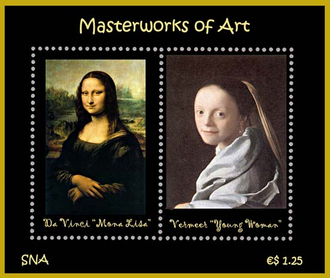

|
Mysterious Women |
|
The painting of Mona Lisa has been a part of France's royal collection since the early 16th century. King Francis I purchased the painting from Leonardo after the artist accepted his invitation to live in France in 1517.
"To enjoy the Mona Lisa, a man of the twentieth century must be capable of putting out of his mind everything that he has ever read about it." - Theodore Rousseau, curator of paintings at the Metropolitan Museum of Art, 1963.
After: http://www.cs.tufts.edu/~jmeattle/hepguru/monalisa/monalisapainting.htm
According to Louvre Curator Jean-Pierre Cuzin, "The entire history of portraiture afterwards depends on the Mona Lisa. If you look at all the other portraits – not only of the Italian Renaissance, but also of the seventeenth to nineteenth centuries – if you look at Picasso, at everyone you want to name, all of them were inspired by this painting. Thus it is sort of the root, almost, of occidental portrait painting."

The background may be a
representation of the universe, with mountains, plains and rivers. Or
possibly it is both reality and the world of dream. One could suppose that
the landscape doesn't exist, that it is the young woman's own dream world.
Looking at that background, one could suppose she dreams sweet dreams, and
perhaps that is why she smiles...
After:
http://www.pbs.org/treasuresoftheworld/mona_lisa/mlevel_1/m3technique.html

The Portrait of a Young Woman is the rarest of all Vermeer's subjects. In technique and lighting, this painting is closely related to Vermeer's most celebrated work, The Portrait of a Girl (Mauritishuis, The Hague)., and seems to have be painted in the late 1660s.
It is a subtle and delicate picture in which the artist explores the ambiguity of human expression with rare sensitivity. The work is remarkable for its simple yet highly sophisticated structure, subtlety of coloring, and intimate mood.
The painting reminded the French critic
Thoré of the most enigmatic of all female portraits, Leonardo da Vinci's
Mona Lisa.
(Source: The Metropolitan Museum of Art Guide).
The above sheet, issued by the Spanish North Africa on June 18, 2003, shows the both mentioned masterpieces. The picture of Vermeer's work was taken by the webmaster, in Mai 2003, at the Metropolitan Museum of Art in New York, USA.
Links:
| Published:
06/18//2003. Revised:
06/18/03. Copyright © 2003 by Victor Manta, Switzerland. All rights reserved worldwide. |
|